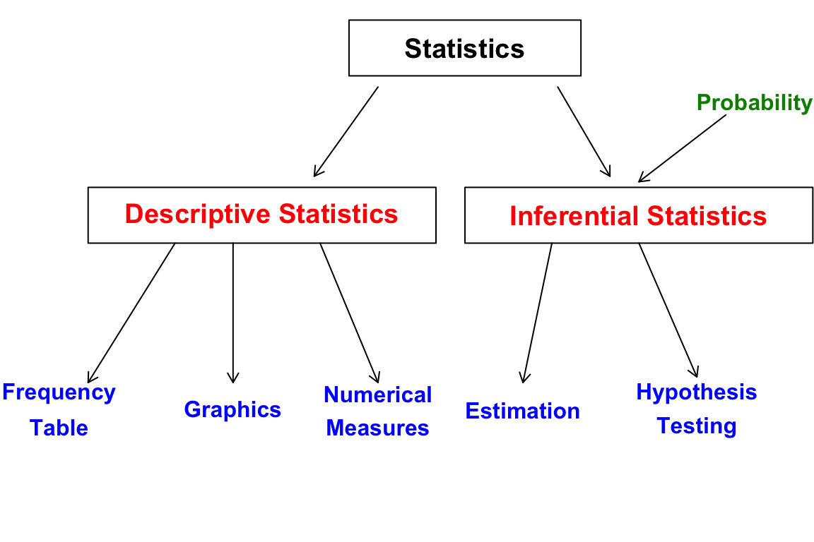
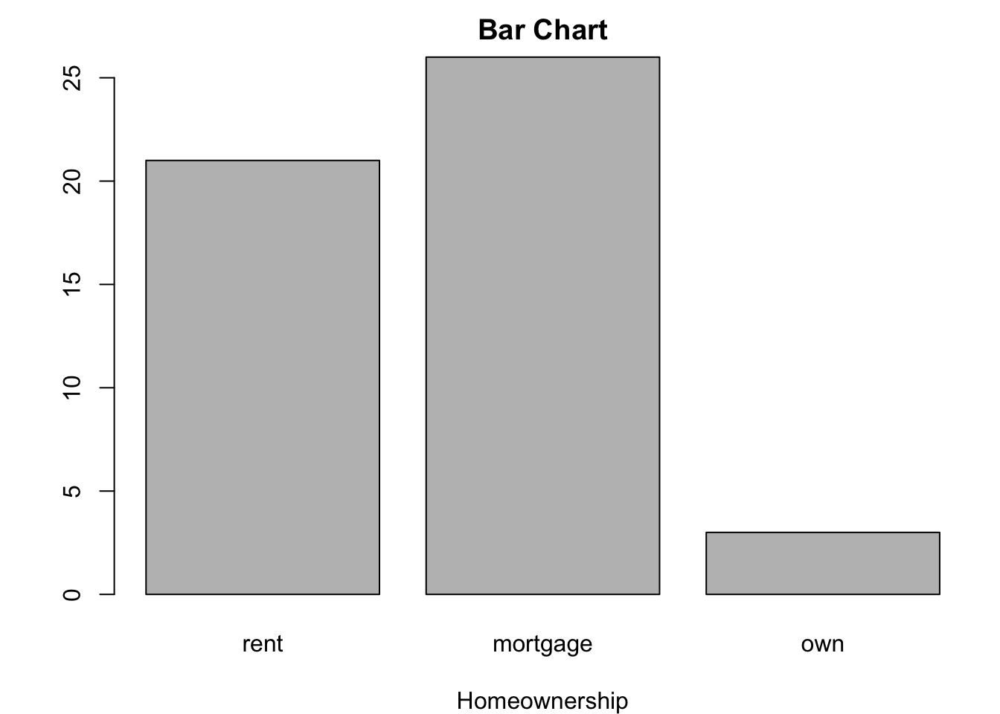
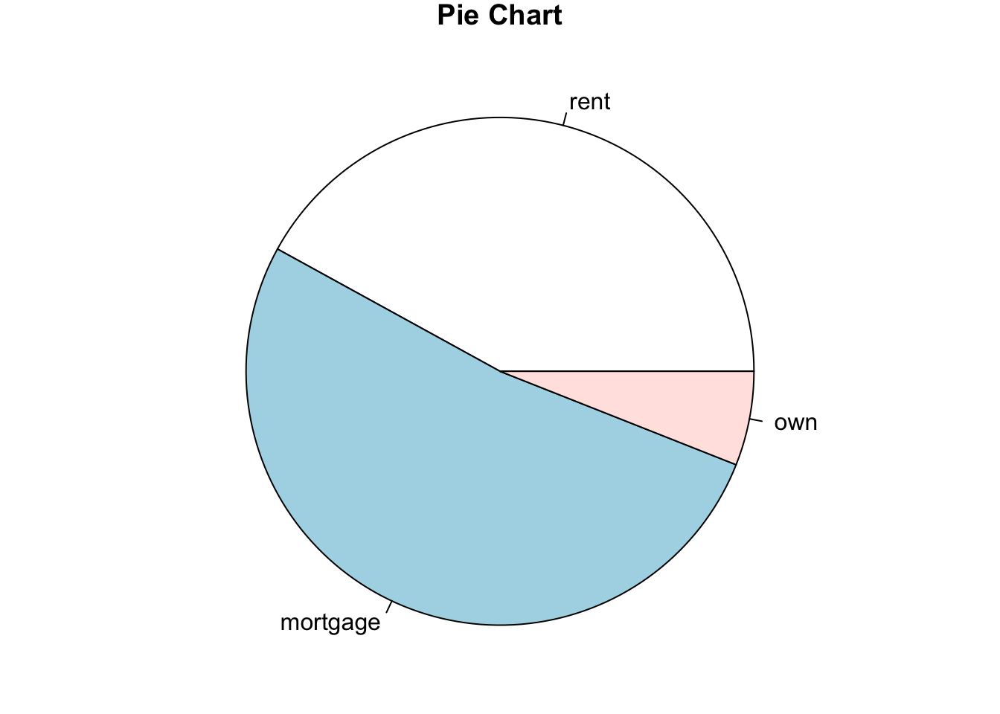
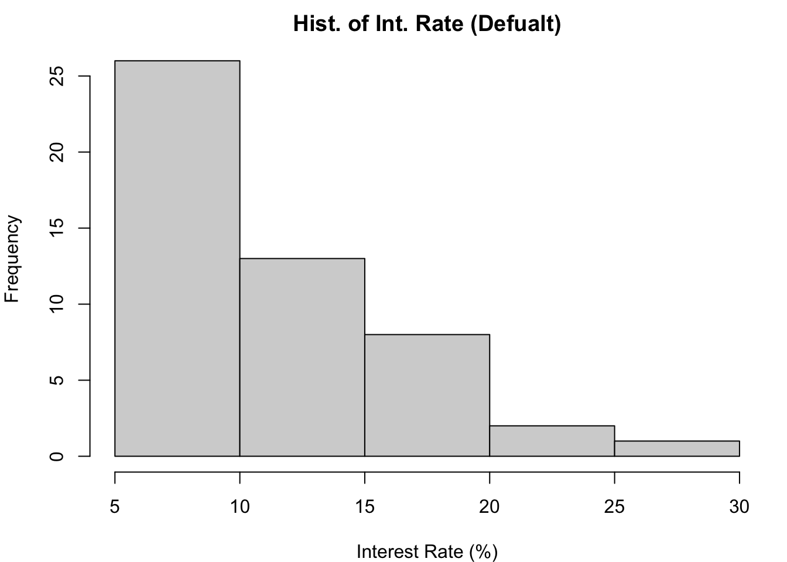
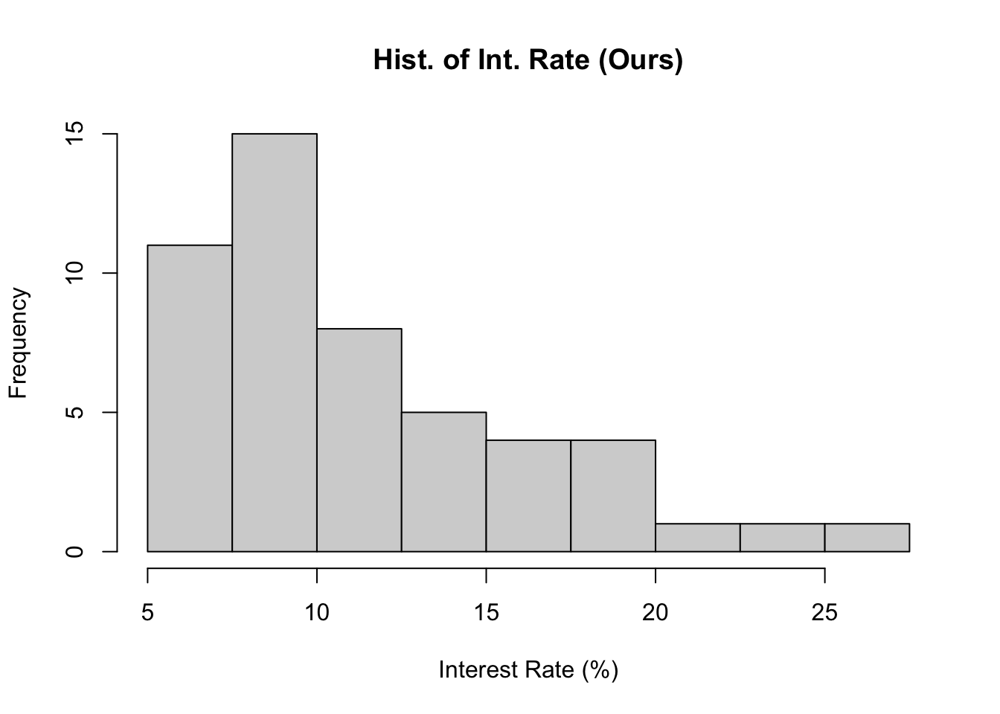
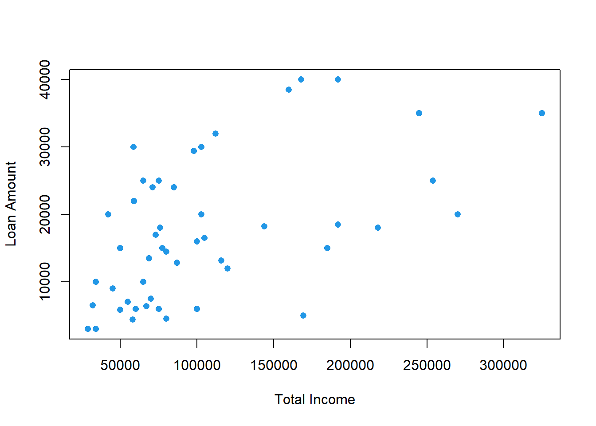

4 Data Visualization
This book serves as a main reference book for my MATH 4720 Statistical Methods and MATH 4740 Biostatistical Methods at Marquette University. Some topics can also be discussed in an introductory data science course. You’ll learn basic probability and statistical concepts as well as data analysis techniques such as linear regression using R computing software.
Descriptive Statistics
- Before doing inferential statistics, let’s first learn to understand our data by describing or summarizing it.
- This can be done using frequency tables, graphics or numerical measures so that appropriate methods can be performed for better inference results.

4.1 Frequency Table for Categorical Variable
- A frequency table (frequency distribution) lists variable values individually for categorical data along with their corresponding number of times occurred in the data (frequencies or counts).
- Below is an example of a frequency table for categorical data with \(n\) being the total number of data values.
| Category name | Frequency | Relative Frequency |
|---|---|---|
| \(C_1\) | \(f_1\) | \(f_1/n\) |
| \(C_2\) | \(f_2\) | \(f_2/n\) |
| … | … | … |
| \(C_k\) | \(f_k\) | \(f_k/n\) |
- Here is another example of a categorical variable color that has three categories.
| Category name | Frequency | Relative Frequency |
|---|---|---|
| Red 🔴 | 8 | 8/50 = 0.16 |
| Blue 🔵 | 26 | 26/50 = 0.52 |
| Black ⚫ | 16 | 16/50 = 0.32 |
Categorical Frequency Table in R
loan50
- Below is the
loan50data set from the openintro package in R.
# install.packages("openintro")
library(openintro)
str(loan50)tibble [50 × 18] (S3: tbl_df/tbl/data.frame)
$ state : Factor w/ 51 levels "","AK","AL","AR",..: 32 6 41 6 36 16 35 25 11 11 ...
$ emp_length : num [1:50] 3 10 NA 0 4 6 2 10 6 3 ...
$ term : num [1:50] 60 36 36 36 60 36 36 36 60 60 ...
$ homeownership : Factor w/ 3 levels "rent","mortgage",..: 1 1 2 1 2 2 1 2 1 2 ...
$ annual_income : num [1:50] 59000 60000 75000 75000 254000 67000 28800 80000 34000 80000 ...
$ verified_income : Factor w/ 4 levels "","Not Verified",..: 2 2 4 2 2 3 3 2 2 3 ...
$ debt_to_income : num [1:50] 0.558 1.306 1.056 0.574 0.238 ...
$ total_credit_limit : int [1:50] 95131 51929 301373 59890 422619 349825 15980 258439 87705 330394 ...
$ total_credit_utilized : int [1:50] 32894 78341 79221 43076 60490 72162 2872 28073 23715 32036 ...
$ num_cc_carrying_balance: int [1:50] 8 2 14 10 2 4 1 3 10 4 ...
$ loan_purpose : Factor w/ 14 levels "","car","credit_card",..: 4 3 4 3 5 5 4 3 3 4 ...
$ loan_amount : int [1:50] 22000 6000 25000 6000 25000 6400 3000 14500 10000 18500 ...
$ grade : Factor w/ 8 levels "","A","B","C",..: 3 3 6 3 3 3 5 2 2 4 ...
$ interest_rate : num [1:50] 10.9 9.92 26.3 9.92 9.43 ...
$ public_record_bankrupt : int [1:50] 0 1 0 0 0 0 0 0 0 1 ...
$ loan_status : Factor w/ 7 levels "","Charged Off",..: 3 3 3 3 3 3 3 3 3 3 ...
$ has_second_income : logi [1:50] FALSE FALSE FALSE FALSE FALSE FALSE ...
$ total_income : num [1:50] 59000 60000 75000 75000 254000 67000 28800 80000 34000 192000 ...homeownership
- The values as well as the frequency table for the variable
homeownershipfrom theloan50data set are shown below.
# 50 values (rent, mortgage, own) of categorical homeownership in loan50 data
(x <- loan50$homeownership) [1] rent rent mortgage rent mortgage mortgage rent mortgage
[9] rent mortgage rent mortgage rent mortgage rent mortgage
[17] rent rent rent mortgage mortgage mortgage mortgage rent
[25] mortgage rent mortgage own mortgage mortgage rent mortgage
[33] mortgage rent rent own mortgage rent mortgage rent
[41] mortgage rent rent mortgage mortgage mortgage mortgage rent
[49] own mortgage
Levels: rent mortgage own## frequency table
table(x)x
rent mortgage own
21 26 3 freq <- table(x)
rel_freq <- freq / sum(freq)
cbind(freq, rel_freq) freq rel_freq
rent 21 0.42
mortgage 26 0.52
own 3 0.06Visualizing a Frequency Table
Bar Chart
- Below is a bar chart that visualizes the
homeownershipfrequency table.
barplot(height = table(x), main = "Bar Chart", xlab = "Homeownership")
Pie Chart
- The
homeownershipfrequency table can also be visualized using a pie chart.
pie(x = table(x), main = "Pie Chart")
4.2 Frequency Distribution for Numerical Variables
- To create a frequency distribution for numerical variables, one must
- Divide the data into \(k\) non-overlapping groups of intervals (classes).
- Convert the data into \(k\) categories with an associated class interval.
- Count the number of measurements falling in a given class interval (class frequency).
| Class | Class Interval | Frequency | Relative Frequency |
|---|---|---|---|
| \(1\) | \([a_1, a_2]\) | \(f_1\) | \(f_1/n\) |
| \(2\) | \((a_2, a_3]\) | \(f_2\) | \(f_2/n\) |
| … | … | … | … |
| \(k\) | \((a_k, a_{k+1}]\) | \(f_k\) | \(f_k/n\) |
- \((a_2 - a_1) = (a_3 - a_2) = \cdots = (a_{k+1} - a_k)\). All class widths are the same!
| Grade | Percentage |
|---|---|
| A | [94, 100] |
| A- | [90, 94) |
| B+ | [87, 90) |
| B | [83, 87) |
| B- | [80, 83) |
| C+ | [77, 80) |
| C | [73, 77) |
| C- | [70, 73) |
| D+ | [65, 70) |
| D | [60, 65) |
| F | [0, 60) |
Interest Rate Data loan50 [OI]
- Below is data for the
interest ratevariable in theloan 50data set.
(int_rate <- round(loan50$interest_rate, 1)) [1] 10.9 9.9 26.3 9.9 9.4 9.9 17.1 6.1 8.0 12.6 17.1 5.3 7.3 5.3 8.0
[16] 24.9 18.1 10.4 8.0 19.4 14.1 20.0 9.4 9.9 10.9 5.3 6.7 15.0 12.0 12.6
[31] 10.9 9.4 9.9 7.3 18.4 17.1 8.0 6.1 6.7 7.3 12.6 16.0 10.9 9.9 9.4
[46] 10.4 21.4 10.9 9.4 6.1
Frequency Distribution of Interest Rate
Class Class_Intvl Freq Rel_Freq
1 5%-7.5% 11 0.22
2 7.5%-10% 15 0.30
3 10%-12.5% 8 0.16
4 12.5%-15% 5 0.10
5 15%-17.5% 4 0.08
6 17.5%-20% 4 0.08
7 20%-22.5% 1 0.02
8 22.5%-25% 1 0.02
9 25%-27.5% 1 0.02range(int_rate)[1] 5.3 26.3- All class widths are the same (2.5%)!
- The number of classes should not be too big or too small.
- The lower limit of the 1st class should not be greater than the minimum value of the data.
- The lower limit of the 1st class is 5%, which is less than the minimum value of 5.3%.
- The upper limit of the last class should not be smaller than the maximum value of the data.
- The upper limit of the last class is 27.5%, which is greater than the maximum value of 26.3%.
Visualizing Frequency Distribution by a Histogram
hist(x = int_rate,
xlab = "Interest Rate (%)",
main = "Hist. of Int. Rate (Defualt)")
class_boundary [1] 5.0 7.5 10.0 12.5 15.0 17.5 20.0 22.5 25.0 27.5hist(x = int_rate,
breaks = class_boundary, #<<
xlab = "Interest Rate (%)",
main = "Hist. of Int. Rate (Ours)")
Skewness
- Key characteristics of distributions include the shape, center and spread.
- Skewness provides a way to summarize the shape of a distribution.


Scatterplot for Two Numerical Variables
- A scatterplot provides a case-by-case view of data for two numerical variables.
- Below is a scatterplot of Loan Amount vs. Total Income from the
loan 50data.
plot(x = loan50$total_income, y = loan50$loan_amount,
xlab = "Total Income", ylab = "Loan Amount",
pch = 16, col = 4)
4.3 Exercises
In the following, we will be using the data set mtcars to do some data summary and graphics. First load the data set into your R session by the command data(mtcars). The data set is like
head(mtcars) mpg cyl disp hp drat wt qsec vs am gear carb
Mazda RX4 21.0 6 160 110 3.90 2.620 16.46 0 1 4 4
Mazda RX4 Wag 21.0 6 160 110 3.90 2.875 17.02 0 1 4 4
Datsun 710 22.8 4 108 93 3.85 2.320 18.61 1 1 4 1
Hornet 4 Drive 21.4 6 258 110 3.08 3.215 19.44 1 0 3 1
Hornet Sportabout 18.7 8 360 175 3.15 3.440 17.02 0 0 3 2
Valiant 18.1 6 225 105 2.76 3.460 20.22 1 0 3 1Please see ?mtcars for the description of the data set.
Use the function
pie()to create a pie chart for the number of carburetors (carb). What the number of carburetors has the most frequencies in the data?Use the function
barplot()to create a bar chart for the number of cylinders (cyl). What the number of cylinders has the most frequencies in the data?Use the function
hist()to generate a histogram of the gross horsepower (hp). Is it right or left-skewed?Use the function
plot()to create a scatter plot of weight (wt) vs. miles per gallon (mpg). As the weight increases, does the miles per gallon tend to increase or decrease?